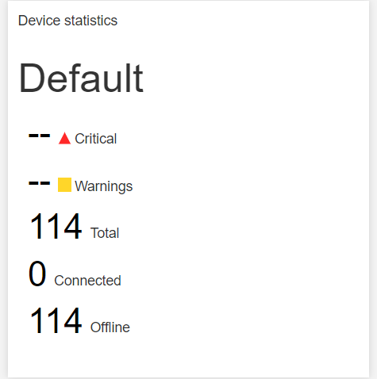
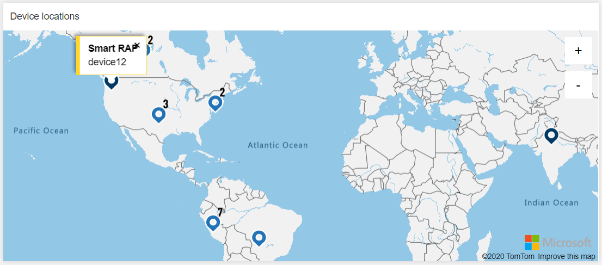
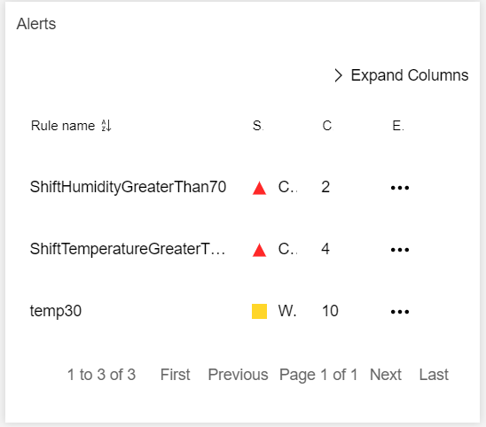
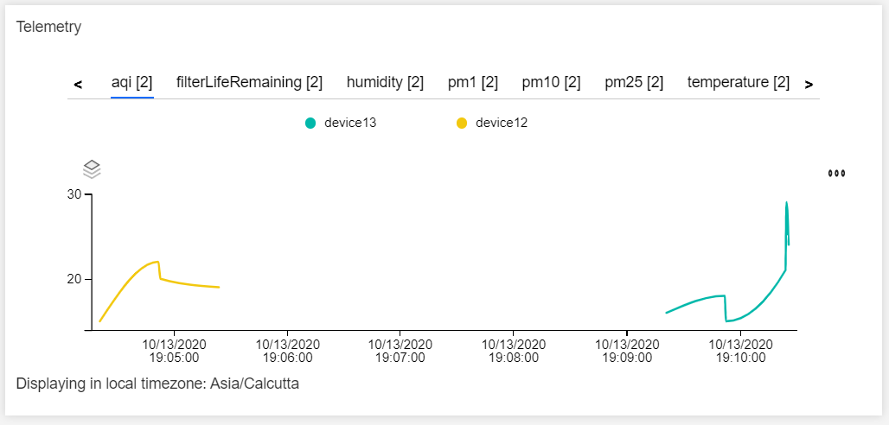
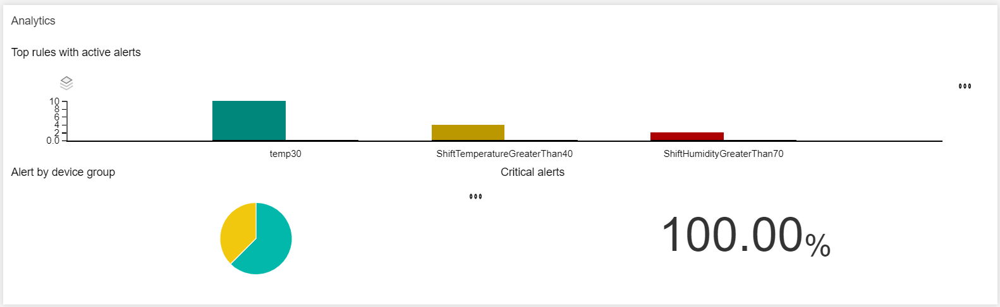

Dashboard
The dashboard is the homepage where the user can visualize and monitor real-time Device status.
Below are the panels dashboard offers:
Device Statistics
Device Statistics provides collective data on IoT Devices' state and health.
Device Statistics provides the following information
- Device Group name.
- Number of critical alerts record in a device group.
- Number of warning alerts record in a device group.
- Total number of IoT Devices present in the device group.
- Number of IoT Devices are online or connected to the internet.
- Number of IoT devices is offline.

Device locations 🗺️
Device locations provide the location of IoT Device in the world map, it only plots those devices configured with coordinates.
Upon clicking pin 📍 on the map, it reveals the device type and device name.

Alerts ⚠️
Alerts list down the anomalies in telemetry based on rules.
Below are the details as follows:
- Rule Name
- Severity
- Count - Number of alerts observed.
- Explore - A link that routes to more details on alert.

Telemetry 📈
Telemetry shows a real-time chart based on data sent by the devices.

Analytics
Analytics provide the visual representation of alerts data in the forms of charts 📈 as follows:
- Top rules with active alerts
- It is visualized in the form of a Bar Graph 📊.
- Graph is represented for number of alerts recorded per rule.
- Alert by device group
- It is visualized in the form of a Pie Graph 🥧📈.
- Graph is represented for number of alerts recorded per device type.
- Critical alerts
- Percentage of Critical alerts in the open state.
